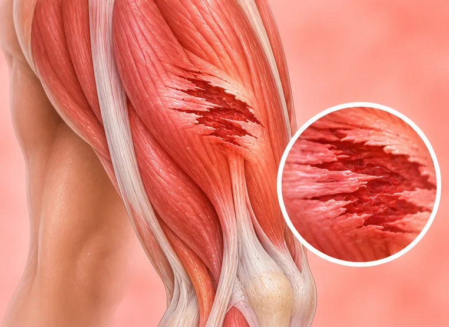
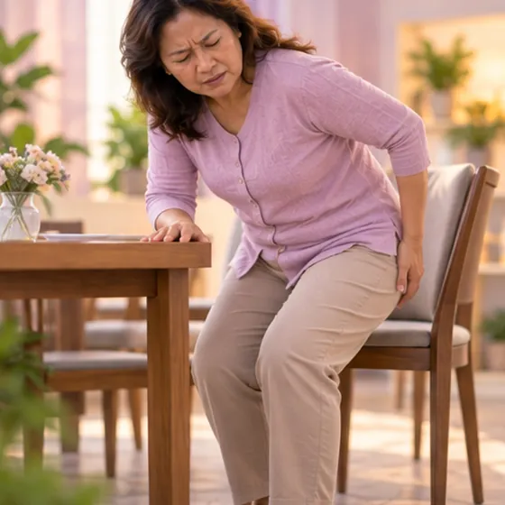
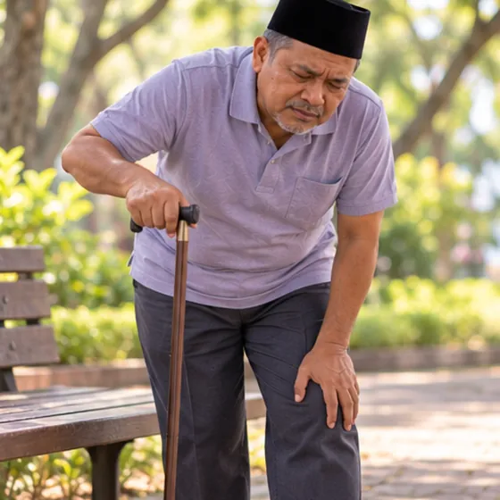
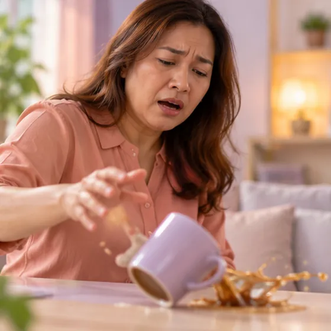

Muscle wasting (muscle atrophy)
Muscles becoming smaller and weaker than before
What it is
Muscle wasting means muscles shrink and lose strength. It may be from not using the muscles, from ageing, or from another health problem that needs a doctor to look into.
- Arms, legs or whole body
- Older adults, long bed rest
- Weak, thinner muscles
- Which doctor
- Family doctor first; neurologist or rehabilitation doctor if needed
- Common in
- Older adults, people after long illness, injury or bed rest
- Contagious
- No
- Course
- Depends on the cause; a doctor can explain what to expect
Common signs

Legs feel weakLeg weakness 
Hard to walk farReduced walking tolerance 
Weak, clumsy gripHand weakness 
Tired all the timeFatigue
Why it happens

Getting olderAgeing 
The cause is not fully knownIdiopathic
Other causes
- Not using the muscles for a long time, such as after bed rest or a cast
- Not enough food or protein, or weight loss from illness
- Nerve problems, joint problems or long-term illness
See a doctor first if
- Sudden weakness in the face, arm or leg, or trouble speaking: call 999
- Weakness or trouble breathing or swallowing that is getting worse
- One arm or leg becoming clearly thinner than the other
- Losing weight without trying
- Frequent falls or not being able to stand up from a chair
If any apply, please see a doctor before a session.
This page is general information. Please keep taking your normal medicine and keep seeing your doctor.
Keep taking your normal medicine and keep seeing your doctor. Our session is a gentle support and does not replace medical care.
Looking after yourself

Eat healthy, balanced mealsBalanced diet 
Make the home safe from fallsFall prevention
More ways to look after yourself
- Stay as active as your doctor allows, with gentle walking
- Ask your doctor or a physiotherapist for safe strengthening exercises
- Get enough rest and sleep
Tell your therapist
- Weak leg or foot
- Numb or tingling arm
- Numb or tingling leg or foot
- Weak bones
- Diabetes or less feeling in the skin
- Cancer or cancer treatment
Your therapist will go through this with you before starting.
Questions and answers
What is Muscle wasting (muscle atrophy)?
Muscles becoming smaller and weaker than before. Muscle wasting means muscles shrink and lose strength. It may be from not using the muscles, from ageing, or from another health problem that needs a doctor to look into.
What are the common signs of Muscle wasting (muscle atrophy)?
Legs feel weak · Hard to walk far · Weak, clumsy grip · Tired all the time
Why does Muscle wasting (muscle atrophy) happen?
Getting older · The cause is not fully known
How can I look after myself with Muscle wasting (muscle atrophy)?
Eat healthy, balanced meals · Make the home safe from falls
Can an AI Body Master session help with Muscle wasting (muscle atrophy)?
A session is gentle, needle-free meridian support for your wellbeing. It does not treat or cure Muscle wasting (muscle atrophy) and never replaces your medicine or your doctor. Tell your therapist about it before the session starts.
Related conditions
- Flat feet
- Brittle bone disease (osteogenesis imperfecta)
- Post-traumatic arthritis
- Kashin-Beck disease
- Snapping hip (clicking hip joint)
- Skeletal fluorosis
- Achilles tendinopathy
- Achilles tendonitis
- Back part of the meniscus torn (knee)
- Worn meniscus (knee)
- Brachial plexus (shoulder-arm nerve) injury
- Fracture from weak bone
References: General information based on public health sources such as Mayo Clinic, NHS, Cleveland Clinic and NCBI StatPearls.
Page updated: 2026-11-01